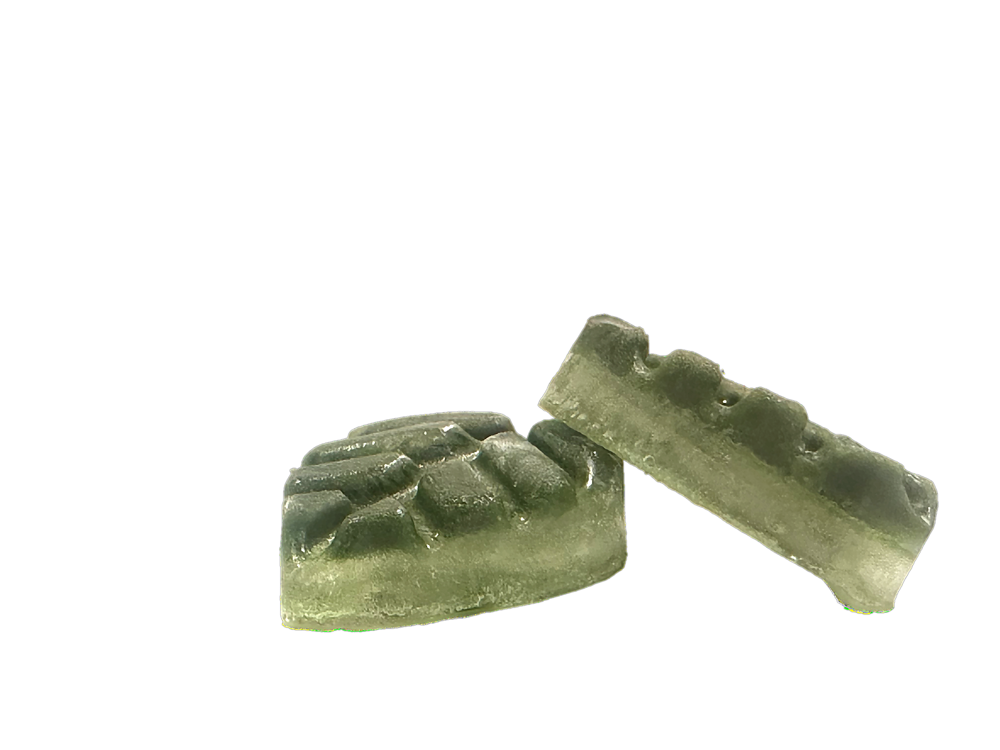
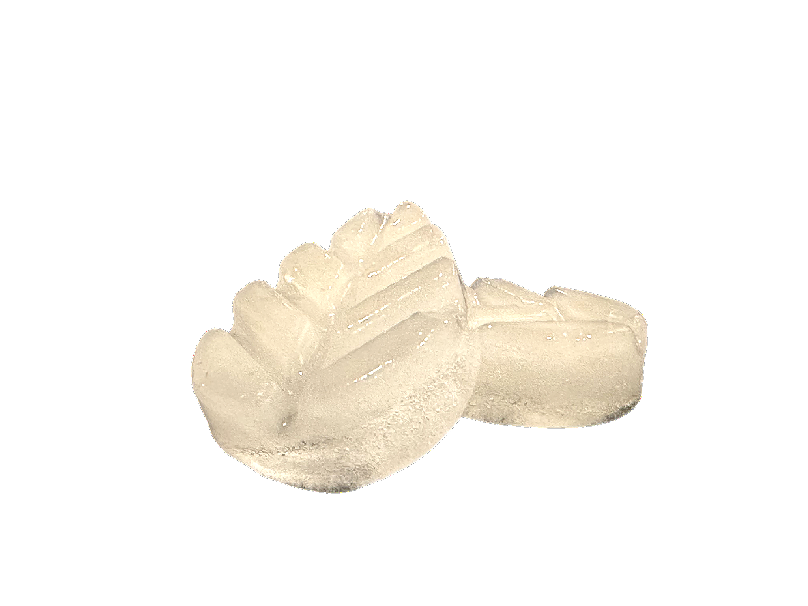
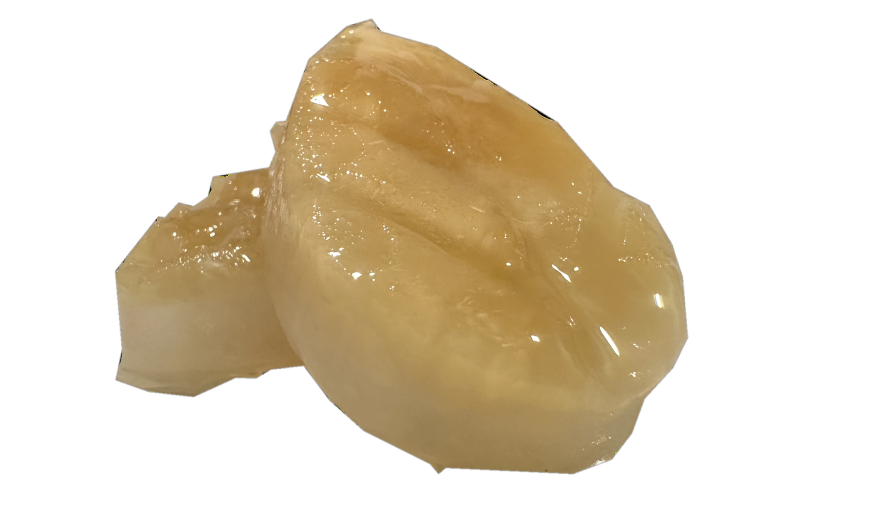

Flǣsc
Protein substrate
Derived from spirulina-based and algal biomass, each pellet is processed to ensure high digestibility, optimal amino acid absorption, and a precisely calibrated protein profile aligned with your biometric needs.
Surplus to sustenance
Derived from spirulina-based and algal biomass, each pellet is processed to ensure high digestibility, optimal amino acid absorption, and a precisely calibrated protein profile aligned with your biometric needs.


Derived from verified surplus grains and root produce, each pellet is processed to ensure a consistent glycemic response and high bioavailability.
Derived from spirulina-based and algal biomass, each pellet is processed to ensure high digestibility, optimal amino acid absorption, and a precisely calibrated protein profile aligned with your biometric needs.
